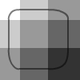

Exemples :
Base texture :
Getting started :
Create your Scale9Image with a texture and the rectangle of your 9grid and... it's done... 60fps and only 1 draw calls
var text:Texture = Texture.fromBitmap(new bitmap(), false, false, 1);
image = new Scale9Image(text, new Rectangle(25,25,35,35));
addChild(image);
Starling.current.nativeStage.addEventListener(MouseEvent.MOUSE_MOVE, function(e:MouseEvent):void
{
image.width = e.stageX;
image.height = e.stageY;
});
Texture Atlas :
you can create a Scale9Image from a part of a texture without adding new drawCalls
var text:Texture = Texture.fromBitmap(new bitmap(), false, false, 1);
var text2:Texture = Texture.fromTexture(text, new Rectangle(10,10,80,80), null);
image = new Scale9Image(text2, new Rectangle(15,15,35,35));
image.scaleIfLower = true;
addChild(image);
Starling.current.nativeStage.addEventListener(MouseEvent.MOUSE_MOVE, function(e:MouseEvent):void
{
image.width = e.stageX;
image.height = e.stageY;
});